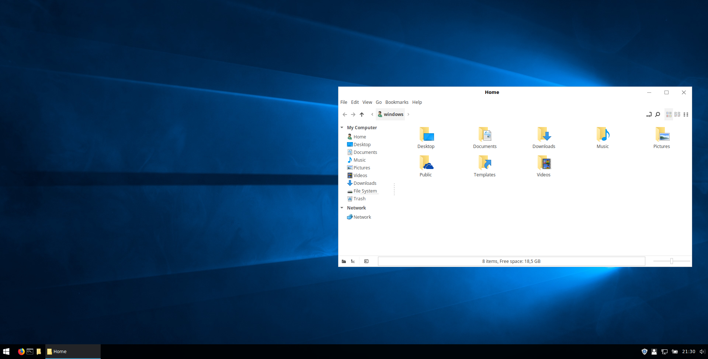
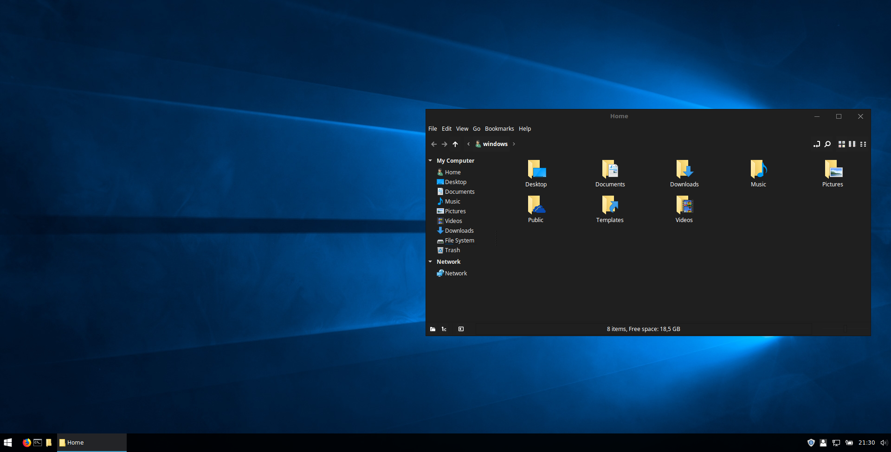
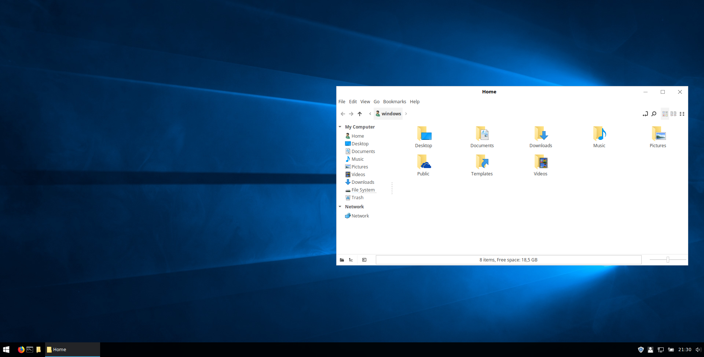
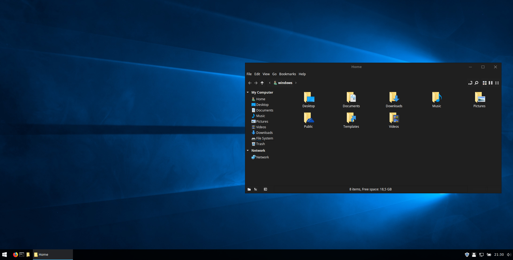

Windows Theme Install Script
This script makes your Linux PC look like it is running Windows 10.
This script automates the tutorial from noobslab.com
Windows Theme
Previews
 
This script makes your Linux PC look like it is running Windows 10.
This script automates the tutorial from noobslab.com
Windows Theme
 